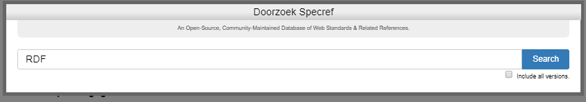
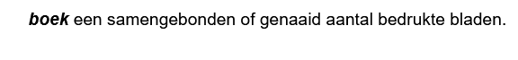

Onderdelen van een ReSpec document
De URL van een publicatie op docs.geonovum.nl
ReSpec documenten worden gepubliceerd op docs.geostandaarden.nl. Iedere gepubliceerde versie van een document heeft een eigen URL. Voor de laatst gepubliceerde versie is een aparte URL.
De URL van iedere publicatie wordt als volgt bepaald:
https://docs.geostandaarden.nl/[pubdomain]/[specStatus]-[spectype]-[shortName]-[publishDate]/
De laatst gepubliceerde versie is OOK te vinden op:
https://docs.geostandaarden.nl/[pubdomain]/[shortName]/
De namen van de variabelen staan verderop uitgelegd.
De bestanden van een ReSpec repository
Het bestand 'index.html'
Het bestand index.html zorgt ervoor dat het ReSpec document automatisch wordt geladen in de browser. Bij het laden wordt ook automatisch de geonovum-ReSpec-code geladen en uitgevoerd. Deze code zorgt ervoor dat het document zijn standaard layout krijgt.
Het bestand 'index.html' heeft een vaste indeling.
In de HTML-header wordt de js-ReSpec bibliotheek geladen. Het enige dat in de header mag worden aangepast is de title (tussen \<title> en \</title>.
In de HTML-Body geldt vrijheid in gebondenheid De <div> en/of <section>
regels mogen worden gekopieerd en toegevoegd. Wel belangrijk om de structuur
over te nemen, dus als volgt:
<div id='H00' data-format='Markdown' data-include="ToCoVo.md"></div>
<section id='H01' data-format='Markdown' data-include="H1-Inleiding.md"\>\<h2\>Inleiding\</h2\>\</section\>
Een <div> is een sectie plus bijbehorend document, dat niet in de
inhoudsopgave terechtkomt. Deze gebruik je bijvoorbeeld voor een Toelichting,
een Colofon of een Voorwoord.
Een <section> komt wél in de inhoudsopgave terecht. Deze heeft daarom behalve
de data-include van het document, ook (verplicht!) een <h2> tag. De tekst
tussen <h2> en </h2> komt in de inhoudsopgave te staan.
Het bestand 'js/config.js'
In config.js wordt een stuurvariabele voor ReSpec gevuld. De waarden in deze variabele worden door ReSpec gebruikt om de layout te bepalen, en bevatten een aantal document-eigenschappen.
SpecStatus
De SpecStatus in de configuratie geeft de keuze uit 4 waarden, deze waarden zijn vastgesteld, en mogen niet zomaar uitgebreid of aangepast worden. Elke status hoort bij een formele fase van een ReSpec document. Zie ook de Geonovum ReSpec wiki.
- wv, Werkversie: Dit is de versie van het document waaraan wordt gewerkt. Deze versie is continu 'under-construction'.
- cv, Consultatieversie: Dit is een 'snapshot' van de versie die 'in consultatie' wordt gezet. Aan deze versie wordt niks meer gedaan totdat de consultatie is afgelopen. Daarna worden alle op en aanmerkingen uit de consultatieronde verwerkt.
- vv, Vaststellingsversie: Dit is een 'snapshot' van de versie na het verwerken van de op en aanmerkingen uit de consultatieronde is ontstaan. Deze versie wordt aangeboden aan de programma-raad van Geonovum, om te worden 'vastgesteld'.
- def, Definitieve versie: Dit is de definitieve versie van het document, zoals vastgesteld door de programma-raad. Van deze versie wordt opnieuw een 'snapshot' gemaakt in ReSpec. Het resultaat van die snapshot wordt op http://docs.geonovum.nl neergezet.
- ld, Levend document: Geschikt voor handreikingen en dergelijke die regelmatig gewijzigd worden en waarvoor niet een consultatie- en goedkeuringsproces gevolgd hoeft te worden
- basis, document zonder officiële status.
SpecType
Het SpecType in de configuratie is een vaste lijst met waarden, deze waarden zijn vastgesteld, en mogen niet zonder overleg met de Technische ReSpec beheerders uitgebreid of aangepast worden.
-
NO Norm: Een norm is bij een officieel standaardisatie instituut ondergebracht en bevat bindende afspraken. Naast het gebruik van normen is NEN 3610 de enige norm waar Geonovum een inhoudelijke verantwoordelijkheid heeft. Het formele beheer en beslissingen worden genomen in de NEN normcommissie 351 240 waar Geonovum de voorzitter van is.
-
ST Standaard: Een document met (bindende) afspraken.
-
IM Informatiemodel: Een standaard waarbij door de term informatiemodel te hanteren wordt aangegeven dat het een abstractie (het model) vormt van de werkelijkheid zoals beschreven binnen een bepaalde sector/domein. Informatiemodellen zijn een semantische invulling van normen voor sectoren zoals ruimtelijke ordening, kabels en leidingen, water, etc..
-
PR Praktijkrichtlijn: Praktijkrichtlijnen zijn producten die informatie geven, vaak met een technisch karakter, die nodig is voor het toepassen van standaarden. Een praktijkrichtlijn hoort altijd bij een standaard/norm.
-
HR Handreiking: Op zichzelf staande documentatie dat als doel heeft een hulpmiddel te zijn, niet verplichtend maar ondersteunend.
-
WA Werkafspraak: Legt uit hoe wetgeving moet worden toegepast bij onduidelijkheden, discrepanties of fouten in de standaarden.
-
BD Beheerdocumentatie: Documentatie met betrekking tot het beheerproces van de standaard. Deze documentatie betreft niet een standaard of onderdeel daarvan, zoals een handreiking of werkafspraak.
-
AL Algemeen: Op zichzelf staande algemene documentatie over standaarden. De documentatie betreft niet een specifieke standaard of onderdeel daarvan, het is ook geen beheerdocumentatie van een specifieke standaard.
pubDomain
pubDomain bepaalt bij publicatie een deel van de URL waarop het document wordt gepubliceerd. Het zorgt voor een groepering van de documenten op docs.geostandaarden.nl Omdat je de URL van gepubliceerde documenten niet wilt veranderen is moet je hier goed over nadenken en alleen in overleg nieuwe toevoegen.
De actuele lijst van pubDomains staat in de tabel hieronder. De herkomst van deze lijst is als volgt:
- Lijst op github : respec-utils.
- docs.geostandaarden.nl.
- register.geostandaarden.nl.
Regel: een pubdomain mag geen hoofletters of spaties bevatten.
| Pubdomain | status | Beslissing | Omschrijving | GitHub Team |
|---|---|---|---|---|
| 3d | actief | 3D | ||
| 3dbv | deprecated | 3D basisvoorziening | ||
| api | OK | Kennisplatform APIs | API team | |
| basisgeometrie | deprecated | redirecten naar nen3610 | Informatiemodel Basisgeometrie | |
| bgt | Arnoud vragen | Basisregistratie grootschalige topografie | BGT team | |
| bro | Basisregistratie ondergrond | |||
| brt | OK | Informatiemodellen Basisregistratie Topografie | BRT team | |
| crs | OK | Coördinaatreferentiesystemen | CRS team | |
| cvgg | duplicaat van img | OK | Informatiemodel Geluid | |
| dcat | OK | |||
| disgeo | OK | DisGeo | ||
| dsgo | OK | Digitaal Stelsel Gebouwde Omgeving | ||
| dso | duplicaten: tpod imow ow | OK | Digitaal Stelsel Omgevingswet | DSO team |
| eu | OK | EU team | ||
| g4w | groeperen? | |||
| gbd | groeperen? | |||
| geobag | OK | |||
| gsw | groeperen? | |||
| ibro | ||||
| imaer | OK | Informatiemodel AERIUS | ||
| imev | OK | Informatiemodel Externe Veiligheid | IMEV team | |
| img | duplicaat: cvgg | redirecten naar cvgg | Informatiemodel Geluid | IMG team |
| imgeo | Arnoud vragen | Informatiemodel Grootschalige Geografie | ||
| imka | OK | Informatiemodel Klimaatadaptatie | ||
| imkad | OK | Informatiemodel Kadaster | IMKA team | |
| imkl | duplicaat: kl | Zou kl moeten worden | Informatiemodel Kabels en Leidingen | IMKL team |
| imle | OK (niet netjes gepubliceerd) | |||
| imro | duplicaat: ro | liefst naar RO | Informatiemodel Ruimtelijke Ordening | |
| imow | duplicaten: tpod ow dso | liefst weg | Informatiemodel Omgevingswet | |
| imx | ||||
| kl | duplicaat: imkl | OK | IMKL | |
| md | duplicaat: metadata | OK | Metadata | |
| mim | OK | Metamodel Informatie Modellering (MIM | ||
| metadata | duplicaat: md | verplaatsen naar md?? | Nederlandse metadata profielen voor datasets en services | |
| nen3610 | OK | NEN3610-Linkeddata | ||
| ngii | OK | |||
| oov | OK | |||
| ow | duplicaten: tpod imow dso | OK | Standaarden omgevingswet | |
| ro | duplicaat: imro | OK | RO Standaarden | |
| rwgs | groeperen? | Raamwerk van Geo-standaarden | ||
| serv | groeperen? | Services | ||
| tpod | duplicaten: ow imow dso | OK | Toepassingsprofiel omgevingsdocumenten | |
| vg | OK | Informatiemodel Vastgoedgebruik | ||
| visu | groeperen? | Visualisatie | ||
| vth | OK | |||
| vtm | is eigenlijk metadata | verhuizen naar MD | ||
| wp | ook een raar pubdomain | verhuizen naar ngii | Whitepaper Geostandaarden |
shortName
Korte identificatie van het document die gebruikt wordt in de URL.
Regel: shortName mag geen uppercase letters bevatten.
Bibliografie
ReSpec maakt automatisch een literatuurlijst van alle documenten waarnaar je verwijst. Een normatieve verwijzing naar een document ziet er als volgt uit
we gebruiken [[SemVer]] voor het nummeren van versies.
De referentie in dubbele blokhaken wordt op drie niveaus gezocht:
- Een globale lijst is te vinden op: SpecRef.
- Een Geonovum brede lijst is te vinden op: https://tools.geostandaarden.nl/specref/. Deze lijst wordt beheerd via: https://tools.geostandaarden.nl/respec/config/geonovum-config.js.
- In de lokale
config.jskan je lokale referenties toevoegen
Bij verwijzingen kan je kiezen of ze normatief zijn of niet. In
de referenties onderaan worden twee lijsten getoond.
Of een referentie normatief is of niet hangt ervanaf of het hoofdstuk
normatief is of niet. Per referentie kan het ook instellen door een
uitroepteken of vraagteken voor de verwijzing zetten te zetten [[!ID]] of [[?ID]].
Content: markdown bestanden
De 'echte' content wordt gemaakt in het formaat 'Markdown'. Er is een aantal editors beschikbaar die dat formaat ondersteunen. Maak van elk hoofdstuk een aparte Markdown file.
Afbeeldingen
Afbeeldingen worden als '.png' of '.svg' bestand neergezet in de map 'media'.
ReSpec Frontend
De knop 'ReSpec'
De knop 'ReSpec' rechtsboven in de frontend van ReSpec, bevat een aantal functies. Als je klikt op de knop, verschijnt het vervolgscherm met een viertal functies.
Elk van de functies wordt hieronder uitgelegd.

Bewaar snapshot

Doorzoek SpecRef
 
De gevonden zoekresultaten kunnen worden overgenomen in het ReSpec document.
HTML ingebed in ReSpec
Omdat wij ervoor hebben gekozen om documenten te schrijven in Markdown, gebruiken wij niet alle ReSpec functionaliteit. In dit hoofdstuk worden de speciale ReSpec functies beschreven die als HTML code in het Markdown document kunnen wordnen opgenomen, of die in de door respec gegenereerde HTML file kunnen worden neergezet. Het gebruik van deze functionaliteit vereist dus wel HTML kennis.
HTML voor Afbeeldingen
Een lijst van afbeeldingen kan door ReSpec automatisch worden gegenereerd, maar dan moet er wel aan een aantal ReSpec specifieke voorwaarden worden voldaan:
In Index.html komt ergens te staan:
<figure id="flowchart">
<img src="flowchart.svg" alt="">
<figcaption>The water flows from bucket A to bucket B.</figcaption>
</figure>
In de documenten worden de afbeeldingen op de volgende manier neergezet:
<figure id="flowchart">
<img src="flowchart.svg" alt="">
<figcaption>The water flows from bucket A to bucket B.</figcaption>
</figure>
NB: <figure> inclusief uniek ID en een ge-embedde <figcaption> zijn
verplicht!
Eventuele referenties naar plaatjes doe je op e volgende manier:
<p>The flowchart shown in <a href="#flowchart"></a> is quite impressive.</p>
</section>
Referentie naar GitHub issues
ReSpec ondersteunt ook een koppeling naar issues die zijn gemeld op GitHub. Jek kan referenties opnemen naar individuele issues. Ook is het mogelijk om een lijst met alle issues op te nemen in je document.
Om GitHub issues op te nemen moet je in 'config.js' een referentie opnemen naar de GitHub repository.
issueBase: "https://github.com/Geonovum/MIM-Werkomgeving/issues/"
Een referentie naar een issue neem je als volgt op:
<div class="issue" data-number="363"></div>
Waarbij data-number het issuenummer is.
Een lijst met issues kan je toevoegen met de volgende HTML code:
<section class="appendix" id="issue-summary">
<!-- Issues will magically be listed here! -->
</section>
Definities in ReSpec
Een onderdeel van een dataspecificatie is de definitie van begrippen. Steeds vaker leggen we bij Geonovum begrippen vast in een begrippenkader. Idealiter verwijs je voor de definitie van een begrip altijd daarnaar. Op deze plek leggen we uit hoe we nu een definitie opnemen.
Definitie van een begrip opnemen in specificatie
In een informatiemodel worden veel begrippen gedefinieerd in de met Imvertor gemaakte catalogus. In andere hoofdstukken worden ook begrippen gedefinieer. Deze handleiding gaat hierover
De beschrijving in de handleiding van ReSpec is heel summier. Hierdoor pas je het snel en eenvoudig toe, maar het leidt niet vanzelfsprekend tot éénduidig gebruik.
Een definitie wordt als volgt gemaakt:
<dfn>boek</dfn>een samengebonden of genaaid aantal bedrukte bladen.
Het resultaat ziet er zo uit:

Gebruik van definitie
Wil je naar een gedefinineerd begrip verwijzen gaat dat zo: <a>boek</a>`` of[=boek-]`
Houd als richtlijn dat je alleen de eerste keer dat een term in een alinea voorkomt een verwijzing maakt. Dit voorkomt een overdaad aan verwijzingen in de tekst.
Aanvullende styling
wrap een definitie in een aside met attribute class="definition"
<aside class="definition">
<dfn>papier</dfn>stof om te beschrijven of bedrukken, uit vezelachtige
stoffen, hout, lompen, stro enz. vervaardigd
</aside>
Resultaat
[afbeelding opnemen]
TODO Het zou wel heel leuk zijn om een link met NL-SBB te leggen.
ReSpec - richtlijn code in tekst
In de tekst gebruik je regelmatig stukken code, in de lopende tekst (inline code), of langere stukken code (code block). Deze handleiding is specifiek bedoeld voor de toepassing van code in documentantatie over informatiemodellen. Voor andere type code staat het je vrij hoe je dit toepast.
Inline code
Wanneer je in een lopende tekst een term of gegeven wilt markeren als code, pas je inline code toe. Door een term of gegeven als code te markeren, maak je duidelijk dat het woord een specifieke technische betekenis heeft. Inline code pas je toe door tekst tussen backticks (`) te plaatsen. De standaardopmaak voor inline code is sober: ReSpec zet het lettertype enkel om in een monospace font. Voor een duidelijkere opmaak van inline code, is daarom een css-bestand beschikbaar. De schrijfwijze van metaklassenamen, modelelementnamen of gegevens volgt de naamgevingsconventies van het MIM. Wees hierop alert als je inline code toepast in handgeschreven teksten.
Metaklassenaam
Pas deze notatie toe als je een modelelement (in UML: stereotype) uit een metamodel opneemt in de lopende tekst. Geonovum past het metamodel informatiemodellering (MIM) toe, maar de onderstaande richtlijn kan ook toegepast worden op modelelementen uit een ander metamodel. Enkele voorbeelden van modelelementen uit het MIM zijn:
«Objecttype»«Attribuutsoort»«Relatiesoort»
Plaats voor deze notatiewijze naam van de metaklasse tussen twee dubbele guillemets «, ». Je vindt ze met de volgende toetsencombinaties:
«="alt"+"["»="alt"+"]"
In markdown neem je een metaklassenaam als volgt op:
`«metaklassenaam»`.
Modelelementnaam
Pas deze notatie toe als je de naam van een modelelement van een informatiemodel opneemt in de lopende tekst. Het gaat dan bijvoorbeeld om de naam van een «Objecttype» of «Attribuutsoort» in een specifiek domeinmodel, zoals bijvoorbeeld:
Pand(«Objecttype»)Persoon(«Objecttype»)naam(«Attribuutsoort»)geboortedatum(«Attribuutsoort»)geometrie(«Attribuutsoort»)VlakOfMultivlak(«Keuze»)
In markdown neem je een metaklassenaam als volgt op:
`modelelementnaam`.
Gegeven
Pas deze notitie toe als je een feitelijk of fictief gegeven opneemt in de lopende tekst. Het gaat om concrete waarden zoals die in een registratie (kunnen) voorkomen, zoals:
"Jan""01-01-1970""234.5""[125.6, 10.1]"
Specifiek in de context van het MIM, gaat het om waarden die ingevuld (kunnen) worden bij de volgende modelelementen:
«Attribuutsoort»«Gegevensgroeptype»«Relatiesoort»«Relatieklasse»«Data-element»«Referentie-element»«Enumeratie-waarde»
In het markdown-bestand neem je een metaklassenaam als volgt op:
`"gegeven"`.
Voorbeeld: gecombineerde inlinecodetypen
Stel je wilt in een tekst de volgende zin opnemen:
Het model bevat een objecttype persoon met een attribuutsoort naam met het gegeven: Jan én een attribuutsoort geboortedatum met het gegeven: "01-01-1970".
Dan ziet die zin er, na toepassing van bovenstaande richtlijnen er als volgt uit:
Het model bevat een
«Objecttype»Persoonmet een«Attribuutsoort»naammet het gegeven:"Jan"én een«Attribuutsoort»geboortedatummet het gegeven:"01-01-1970".
Uitgeplitst naar inlinecodetype, levert dat het volgende overzicht op:
Metaklassenaam
«Objecttype»«Attribuutsoort»
Modelelementnaam
Persoonnaamgeboortedatum
Gegeven
"Jan""01-01-1970"
Code block
Als je een stuk code hebt dat uit meerdere regels bestaat, kun je dit in een code block plaatsen. Hiermee scheidt je de code van de lopende tekst in een apart tekstblok. In het markdown-bestand neem je een stuk code dat uit meerdere regels bestaat als volgt op. Plaats de code tussen drie backticks (```). Geef optioneel direct achter de eerste drie backticks de (programmeer-)taal op voor syntax highlighting, zoals in het volgende voorbeeld.
input
```json
{
"type": "Feature",
"geometry": {
"type": "Point",
"coordinates": [125.6, 10.1]
},
"properties": {
"name": "Dinagat Islands"
}
}
```
rendered output
{
"type": "Feature",
"geometry": {
"type": "Point",
"coordinates": [125.6, 10.1]
},
"properties": {
"name": "Dinagat Islands"
}
}